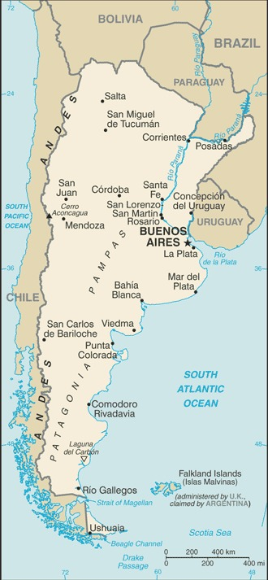

Genel Bilgiler
Arjantin, Güney Amerika’da yer alan federal bir cumhuriyettir. Başkenti Buenos Aires’tir. Yaklaşık 46 milyon nüfusa sahiptir. Resmî dili İspanyolca’dır ve para birimi Arjantin Pesosu (ARS)’dır. Arjantin, geniş tarım alanları, doğal kaynakları ve kültürel mirası ile tanınır.
Arjantin, kuzeyde Bolivya ve Paraguay, kuzeydoğuda Brezilya, doğuda Uruguay ve Atlas Okyanusu, batıda Şili ile çevrilidir. Yüzölçümü yaklaşık 2.780.400 km²’dir. Ülke coğrafyası dağlar, pampalar, platolar ve Patagonya bölgesinden oluşur. Önemli nehirleri Paraná, Uruguay ve Colorado’dur.
Başkent: Buenos Aires
Kıta: Kuzey ve Güney Amerika
Yüzölçümü: 2.780.400 km²
Nüfus (2025): 45.0 milyon

Bayrak Anlamı: Arjantin bayrağı yatay üç eşit şeritten oluşur: açık mavi, beyaz ve açık mavi; ortada sarı güneş sembolü bulunur. Açık mavi gökyüzünü, beyaz barışı ve saflığı, güneş ise özgürlüğü ve bağımsızlığı simgeler. Bayrak 1818 yılında kabul edilmiştir.
Arjantin Haritası
Ekonomi
Arjantin ekonomisi tarım, sanayi ve hizmet sektörlerine dayanır. Tarımda soya, buğday, mısır ve et üretimi öne çıkar. Sanayi sektöründe gıda işleme, otomotiv ve kimya öne çıkar. Hizmet sektörü finans, turizm ve ticaret alanlarında gelişmiştir. Arjantin, doğal kaynakları ve geniş tarım alanları ile Güney Amerika’da önemli bir ekonomik güce sahiptir.
| Yıl | İhracat (Milyar $) | İthalat (Milyar $) |
|---|---|---|
| 2019 | 65 | 68 |
| 2020 | 45 | 55 |
| 2021 | 70 | 80 |
| 2022 | 75 | 85 |
| 2023 | 78 | 88 |